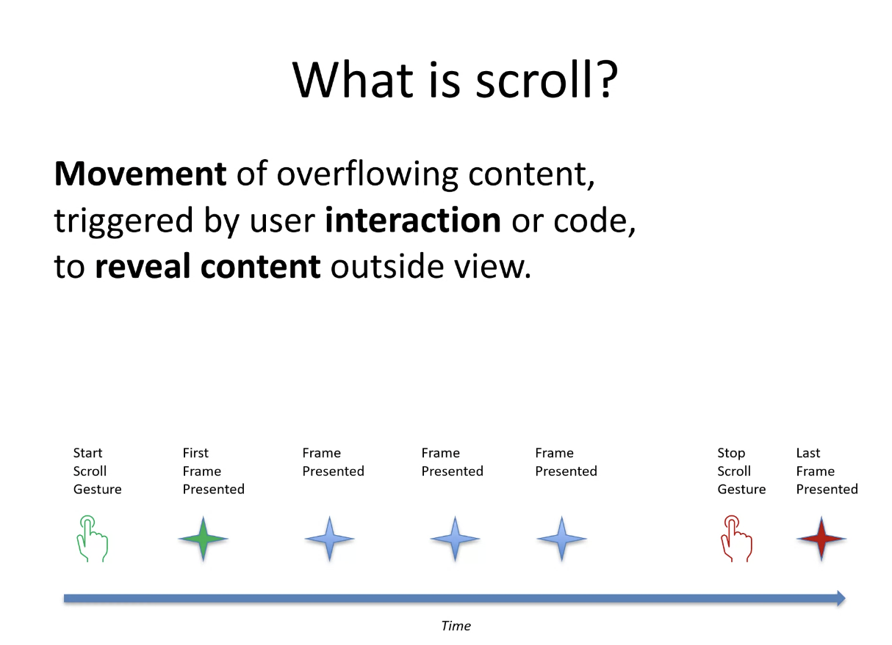
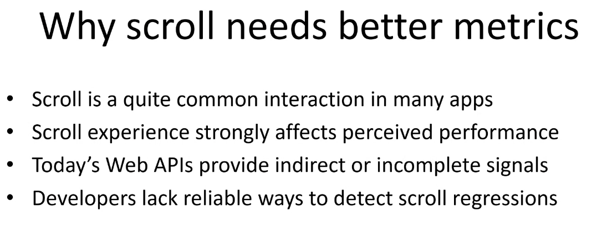
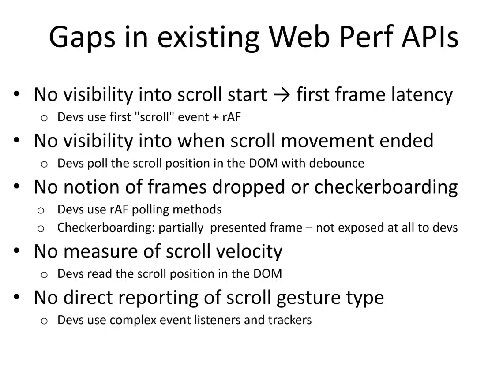
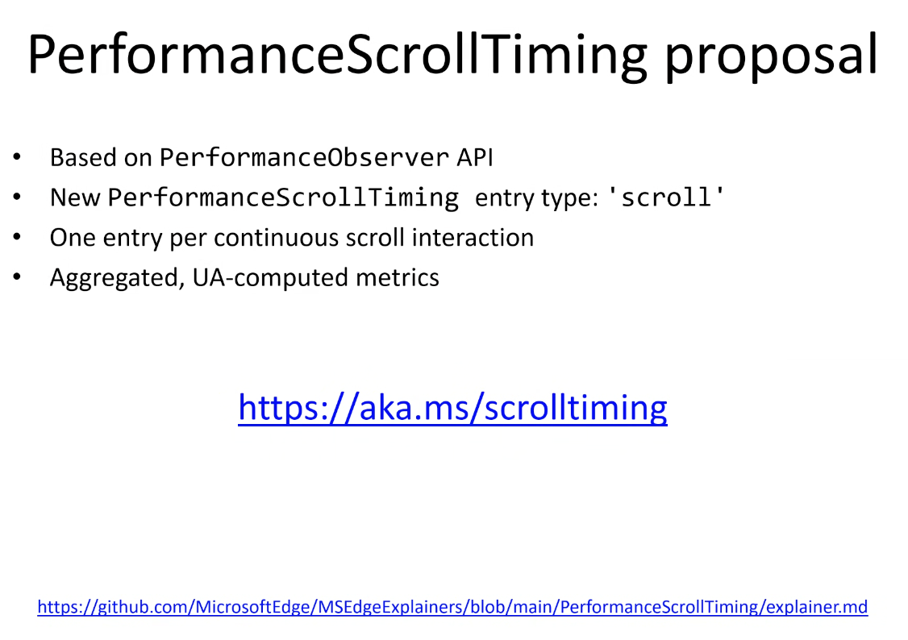
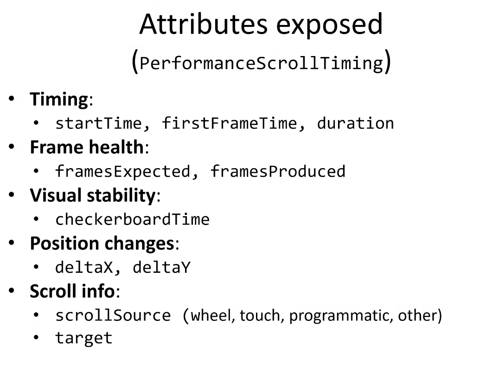
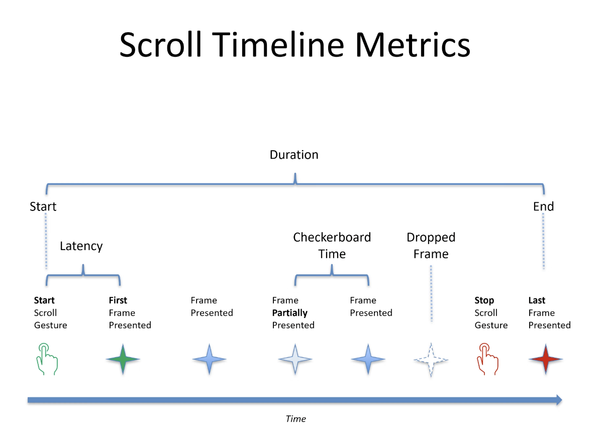
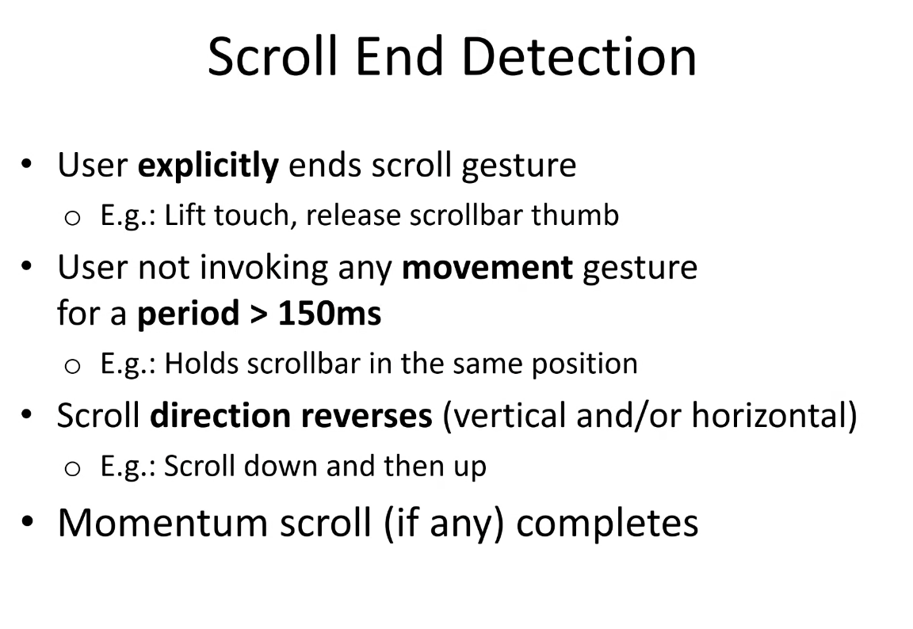
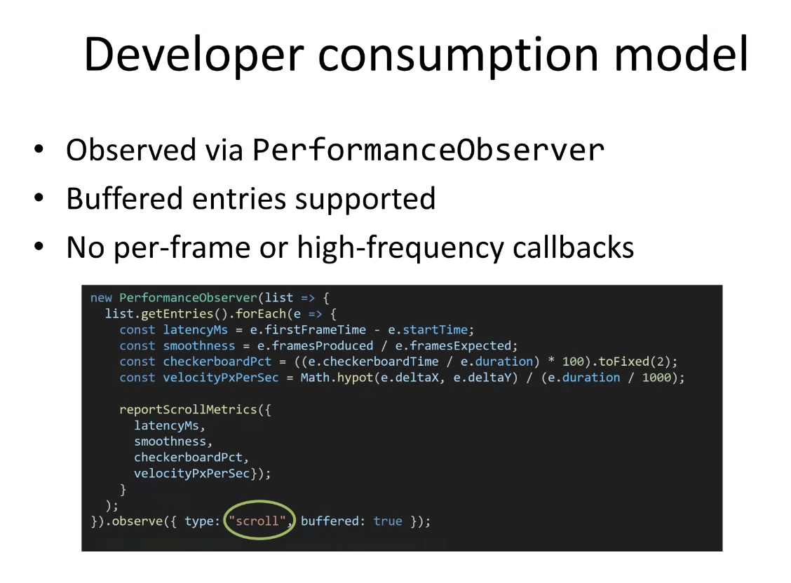
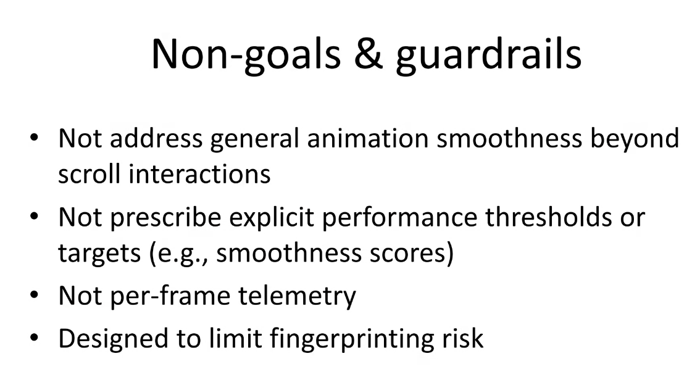
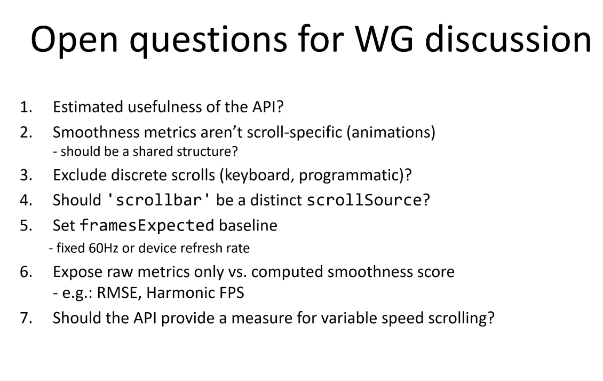

Participants
- Nic Jansma, Yoav Weiss, Carine Bournez, Dave Hunt, Franco Vieira de Souza, Guohui Deng, Leon Brocard, Michal Mocny, Noam Helfman, Noam Rosenthal, Olga Gerchikov, Patrick Meenan, Thomas Bertet, Barry Pollard, Bas Schouten, Boris Schapira, Alex Christensen, Elad Alon, Joone Hur, Pninit Goldman, Petr Cermaik, Tsvetan Stoychev
Admin
- Next meeting: February 12 (later slot)
- CfC for Long Animation Frames FPWD closes January 30th
Minutes
- https://github.com/w3c/long-animation-frames/pull/30
- Yoav: CSS performance, and finding attribution is hard
- … since then, I've looked into what we have available
- … Long Animation Frames get us not far from where we need to be for attribution
- … Missing piece of information, proposal
- … LoAF have style and layout start under the entry itself
- … Under every script there's forced style and duration
- … What the script forced the browser to do out of the regular cycle
- … This is already very good in terms of finding style work happening as a result of a certain script or frames
- … Missing piece is that style and layout are bundled together
- … As a developer, dealing with style "too long" is different than layout "too long"
- … Different causes, different fixes
- … Proposed styleDuration and forcedStyleDuration, captures style calc portion of this
- … Adding to LoAF entry itself (styleDuration)
- … Adding forcedStyleDuration to script timing underneath it
- … Think it's relatively simple addition
- … Potentially some questions around whether we need total styleDuration to include forcedStyleDurations underneath (as spec'd it doesn't include)
- … Otherwise there are some questions around making styleDuration, not well defined concept in specs, as a result specifying this is very hand-wavey
- … Would love to figure out a way to fix that
- NoamR: Between time of style + layout start, and frame rendering end, you might do style, layout, scripts, resizeObserver
- Yoav: Missed resize observer also runs scripts in that timeframe
- NoamR: Otherwise we'd be able to put more info in there
- … Could be several fronts of style + layout
- Yoav: Essentially, we will need also layout duration and forcedLayoutDuration under each script
- NoamR: Or some combination of it
- … Main issue is interop, defining what it means to do style and layout (hand-wavey in CSS specs)
- Michal: Proposal makes a lot of sense to me, easy to expose timings if they're already available to web developers (not new info)
- … Certain properties you can read that only force style recalc, or only layout recalc, so developers could time these individually
- … Wasn't sure how carefully I could force and measure via performance.now()
- … Any script can polyfill
- … For lazy rendering cycle, you could always have rAF
- … For most part developer can already measure this
- … Easier case to expose if they're already measurable
- Nic: customers concerned about interactions with the DOM. RUM scripts can accidentally trigger style and layout. Having that information available can help prove innocence
- Barry: Any knowledge how difficult it would be to implement in WebKit or Gecko?
- Yoav: Suspect that they have layout and style calc times
- … Main issue there is if style and layout phases are different than what Chromium currently has
- … Even if possible today though, spec can drift over time
- … Would be great to specify what these numbers mean, but that would be a large and slightly-orthogonal project
- Barry: Not suggesting we do, but didn't know if there would be an objection from other engines
- Alex: Don't know layout code very well
- Bas: I don't other
- Yoav: If you could take this to the right people internally, and voice objections if there are any
- Bas: Yes
- Alex: Yes
- Michal: Separate feature request related to this, to summarize all forced layout and style across all scripts across Frame Timing Info
- … This has come up already that sometimes you have some number of scripts under 5ms that still add to forcedStyle/Layout and folks have asked for this
- … Folks have asked for a sum across all scripts
- … You'll often have a busy loop to force rendering
- … Don't have insights into total 'purple' amount as in lab trace as they don't all have attribution
- Yoav: Specific examples can help
- Michal: Field reports and multiple users requesting this
- NoamR: A bunch of 3ms scripts that force layout and can add up to LoAF
- Yoav: Would suspect forced layout to take longer than 5ms?
- NoamR: Maybe?
Recording
- NoamH: New proposal about scroll timing. Looking for feedback
- …
- …

height: 371.19px; margin-left: 0.00px; margin-top: 0.00px; transform: rotate(0.00rad) translateZ(0px); -webkit-transform: rotate(0.00rad) translateZ(0px);" title=""> - …

height: 176.70px; margin-left: 0.00px; margin-top: 0.00px; transform: rotate(0.00rad) translateZ(0px); -webkit-transform: rotate(0.00rad) translateZ(0px);" title=""> - …

height: 383.86px; margin-left: 0.00px; margin-top: 0.00px; transform: rotate(0.00rad) translateZ(0px); -webkit-transform: rotate(0.00rad) translateZ(0px);" title=""> - …

height: 364.03px; margin-left: 0.00px; margin-top: 0.00px; transform: rotate(0.00rad) translateZ(0px); -webkit-transform: rotate(0.00rad) translateZ(0px);" title=""> - …

height: 350.23px; margin-left: 0.00px; margin-top: 0.00px; transform: rotate(0.00rad) translateZ(0px); -webkit-transform: rotate(0.00rad) translateZ(0px);" title=""> - …

height: 374.00px; margin-left: 0.00px; margin-top: 0.00px; transform: rotate(0.00rad) translateZ(0px); -webkit-transform: rotate(0.00rad) translateZ(0px);" title=""> - …

height: 312.51px; margin-left: 0.00px; margin-top: 0.00px; transform: rotate(0.00rad) translateZ(0px); -webkit-transform: rotate(0.00rad) translateZ(0px);" title=""> - …

height: 434.51px; margin-left: 0.00px; margin-top: 0.00px; transform: rotate(0.00rad) translateZ(0px); -webkit-transform: rotate(0.00rad) translateZ(0px);" title=""> - …

height: 257.80px; margin-left: 0.00px; margin-top: 0.00px; transform: rotate(0.00rad) translateZ(0px); -webkit-transform: rotate(0.00rad) translateZ(0px);" title=""> - …

height: 347.98px; margin-left: 0.00px; margin-top: 0.00px; transform: rotate(0.00rad) translateZ(0px); -webkit-transform: rotate(0.00rad) translateZ(0px);" title=""> - … Feedback welcome!
- … <demo>
- Elad: looks extremely interesting. Pulling in interested folks!
- Bas: Hesitating on the 60hz. Fingerprintable but already exposed
- … “expected frame rate” - if we have a 1 second scroll, it should be 60 on 60Hz. If you move slow enough or stop scrolling but for less than 150ms
- NoamH: can happen when users scroll very slowly. Developers would be able to exclude them from collection, but don’t want to exclude from the proposal
- Bas: The frames expected could be lower than 60, right? (1 second scroll on 60Hz)
- … Happens all the time in touch devices, and that’s probably fine
- … If that number isn’t changing when users scroll slowly, we don’t need it
- … Also, tricky to say how well this is being tracked correctly, as none of this happen sync in the page
- Barry: scroll work in the CSSWG. Should we coordinate efforts? Maybe overlap around scrolling stop?
- NoamH: maybe. Let’s follow up!
- Michal: For the scrollbar scroll source, is that just because they tend to have higher velocity scrolls, so higher checkerboarding? Why is it important to know the scroll source?
- NoamH: At the moment it’s not included due to fingerprinting concerns
- … Can be useful when doing analysis and break down the data based on user behavior
- … middle click autoscroll as well
- … If we can’t break it down during analysis, it can make it harder for developers to understand the data
- Nic: thinking about my scroll behavior. When I use a trackpad, I use 2 finger scrolling. Zooming in on something can generate multiple scrolls?
- NoamH: That’s the intent as they are different interactions, even if the user thinks of it as a single operation
- … Developers may decide to drop very short scrolls
- … even the 150ms idle time is tricky to prescribe - is it the right number? So don’t want to add more
- Nic: I’m supportive of more information that enables developers to do what they need with it
- Bas: if you have 60fps animations at the same time as scrolling, may be harder to distinguish expected frames related to scroll from expected frames unrelated to scroll
- … I’m in favor of raw metrics rather than RMSE
- … But bookkeeping can be tricky for developers
- Elad: How many events do you expect to be emitted per second. Don’t want the event processing to skew the performance itself
- NoamH: PerformanceOberver so async. Shouldn’t be too impactful
- … Too many events could spam the main thread, but in my experience we get a maximum of 10 for typical humans. O(few per second)
- Elad: For a typical scroll, would I see ~3 events?
- NoamH: “normal” scroll - 100ms to 2s. Not too many events per second.
- Elad: Have you considered getting the threshold as a parameter?
- NoamH: Should consider it. Similar to event timing (default that can be overridden)
- Elad: If I stop and continue, that’s 2 scrolls. Could “continue” be a different scroll source?
- NoamH: So a scroll interaction ID? To enable to group them together to an interaction?
- Elad: Maybe.
- Yoav: For EventTiming, we have the model of interactionId, could borrow from that model here
- NoamH: For privacy, wouldn't expose more information, can do with existing APIs by hooking into onscroll and scrollend events
- … In API proposal there's a link to the polyfill, not exposing new information
- Philip: can sometimes have nested scrollbars where scrolling the container moves it and then at the bottom, you move to scroll the page. Is that the same scroll event? Scroll target changed..
- NoamH: Good point. I was thinking that a new scroll target triggers a new scroll entry
- Philip: So we could compare the scroll end and scroll start to know one continued the other
- Yoav: If we had an interactionId, they could have the same ID
- Bas: To confirm, in cases of fling, it would last until momentum has ended (rather than finger leaves screen)
- NoamH: Current intent yes
- … Rationale is that's what user experiences as scroll
- Yoav: A lot of interest, where should people file issues / cheer / feedback?
- NoamH: Github Issue repo, placeholder issue for any more feedback can be filed